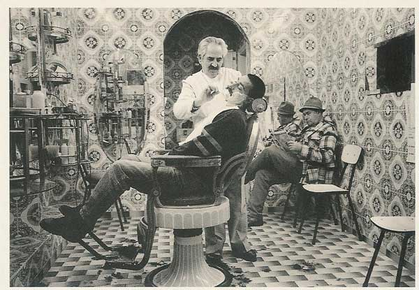
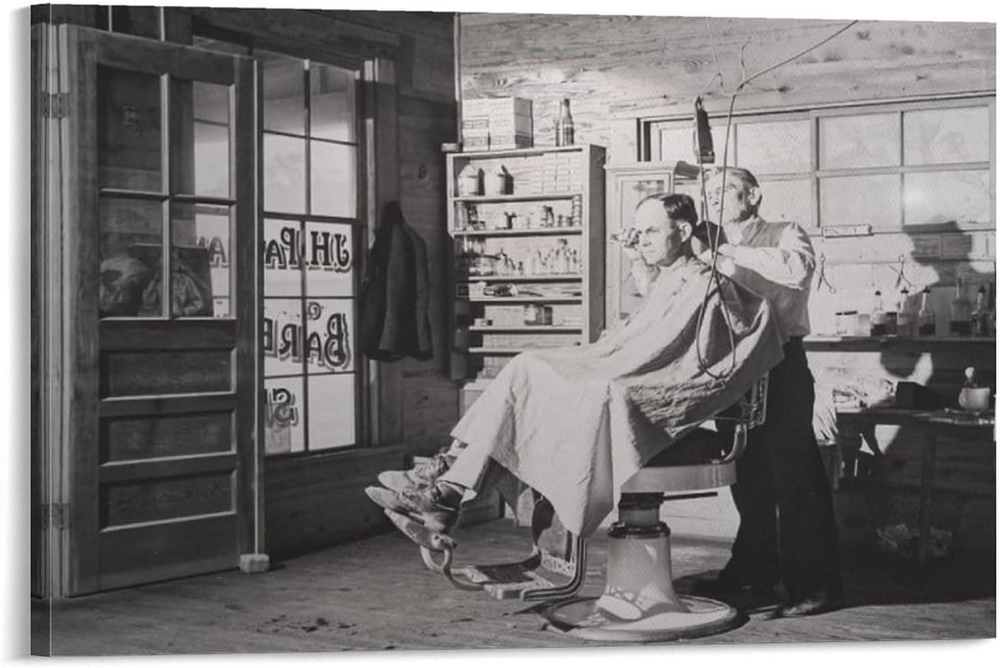
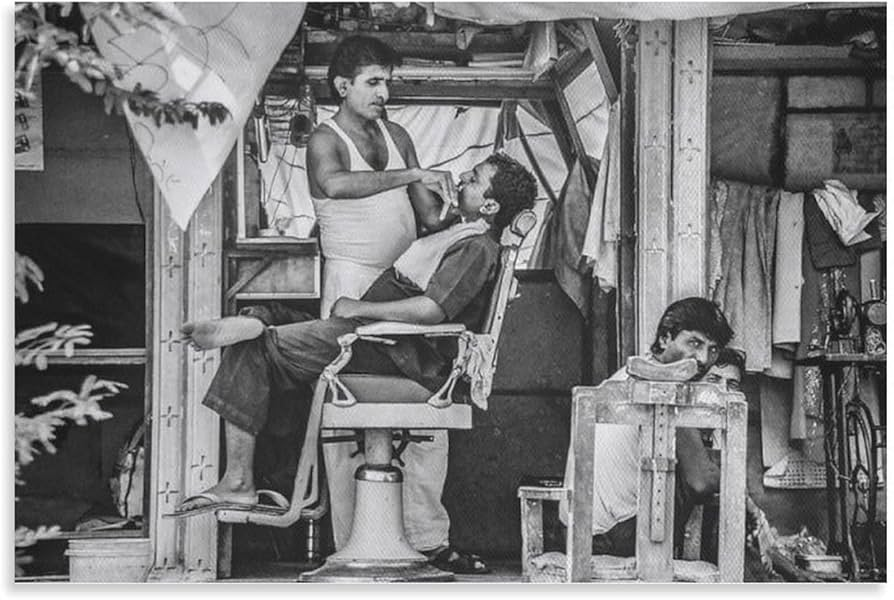

Atendimento personalizado com um horário de funcionamento top de linha: 06:00 às 23:00.
Horário maior que esse só na época da escravidão.
Aqui em nossa barbearia, você vai entra véio e vai continuar véio, só que mais novo.
Enquanto você espera pode comer um pão de queijo e um café quentinho, ler um jornalzinho, bater papo, reclamar da vida.
Só entrar aqui que te você sai novinhe em folha.
Nossa equpe é top memo. Conheça um pouco mais sobre os profissionais:
Com mais de 60 anos de experiência e 20 de miopia, Zé é o da travaia. Só corto 10 pescossos até hoje.
João é o mais novo da turma. 108 anos de pura paixao no pesinho.
O Chico é o carra do bigodinho.
Rua da pinguela, nº666 - São João da Paz-SP - Fone: (17) 5566-6677